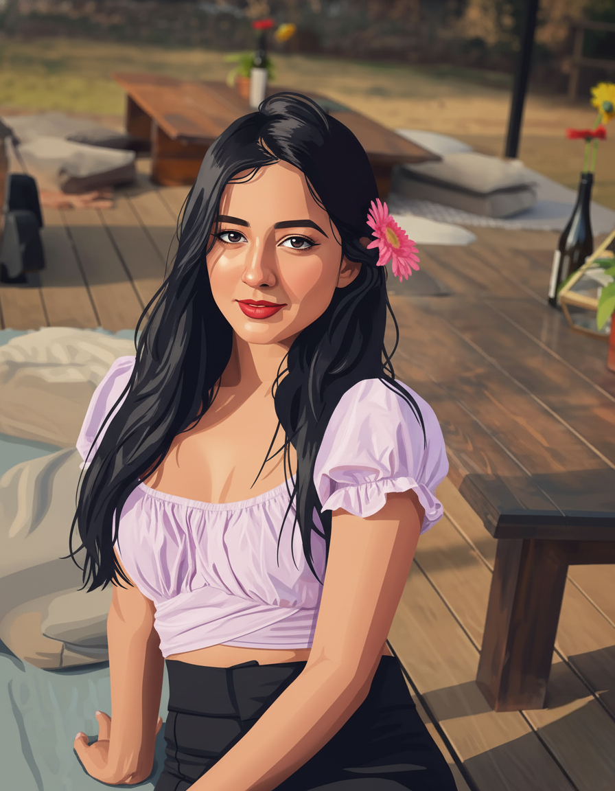
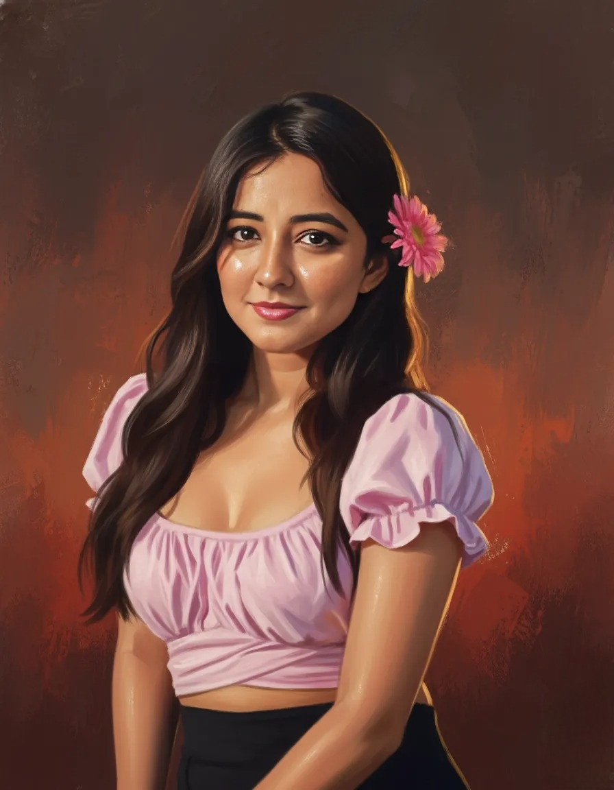

CM
CelebModeOn
Signature Tribute
The Charm. The Grace. The Stardom.
A small celebration for Tanya Sharma — cheers to more fans & success.
Celebrating Tanya Sharma ✨
Gaining hearts, inspiring fans — keep shining.

Gaining hearts, inspiring fans 🌸

Wishing more success & future hits ahead 💫
With love — CelebModeOn ❤️